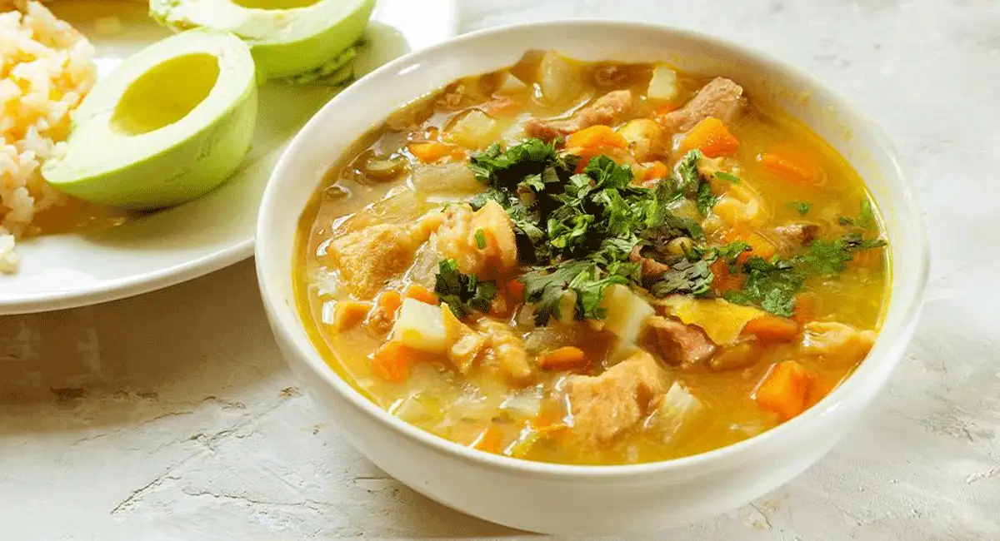

Comenzamos por lavar los garbanzos y ponerlos a cocinar en una olla hasta que estén blandos, después procedemos a molerlos
Tomamos un sartén, echamos un poquito de aceite y sofreímos las cebollas de cabeza picada en cuadritos, y las ramas de cebollas largas. Después echar y mezclar con el garbanzo que hemos molido. Agregar sal, comino, pimienta al gusto y reservar.
Comenzar a preparar la masa, para esto tomaremos un bol y mezclaremos todos los ingredientes secos tales como: harina, una pizca de sal, el azúcar y polvo de hornear. Mezclar bien y abrir un orificio en medio para agregar los huevos, la leche y la mantequilla medio derretida.
Mezclar todo con una paleta y después usar las manos por 10 minutos, al cabo de este tiempo, pasar a una mesa, añadir harina en caso de que se siga pegando, hasta obtener una masa suave y que no se pegue.
Dejar reposar 30 minutos
Sacar la masa, ponerla de nuevo sobre la mesa, amasar por otros 10 minutos, y solo agregar harina si se pega un poco. Después estirar y hacer círculos de 10cm de diámetro
Se rellena la masa con el garbanzo, después se cierra con ayuda de un tenedor y se fríen con suficiente aceite.
Mute

Comida tipica de Cúcuta, Mute Santandereano
Ingredientes
1 unidad de zanahoria
2 dientes de ajo
al gusto de sal
1 unidad de cebolla larga
3 cucharadas de vinagre
1 unidad de tomate
300 gramos de papa criolla
al gusto de cilantro
al gusto de guasca
1 unidad de aguacate
750 gramos de callo
130 gramos de arveja
130 gramos de garbanzo
400 gramos de papa negra
300 gramos de ahuyama
500 gramos de carne de res
300 gramos de arracacha
100 gramos de macarrón
150 gramos de frijol bola roja
1/2 cucharadita de condimento de su preferencia
500 gramos de maíz para mute
500 gramos de mano de res picada
Preparación
Lavar y dejar en agua con vinagre el callo y la mano de res por 15 minutos. Pasado este tiempo lavar muy bien con agua y poner a cocinar con un poco de sal
Picar la carne en trozos y agregar a la olla presión con el callo y la mano de res. Una vez la olla empiece a pitar dejar 20 minutos.
Lavar y picar en cubos la zanahoria, la ahuyama, la arracacha, la papa criolla, la papa negra.
Poner a cocinar los garbanzos, los fríjoles y las arvejas en ollas aparte con un poco de sal.
Sacar la grasa del caldo que tiene las carnes.
Agregar todos los ingredientes precocidos en una olla grande con agua, dejar hervir y cuando ya esté en este punto añadir la papa negra. Luego incorporar la arracacha y dejar cocinar por unos minutos.
Mientras tanto hacer el guiso con la cebolla, el tomate y ajo.
Añadir a la mezcla los garbanzos cocidos, revolver y 15 minutos antes de que la papa negra se ablande agregar el maíz de mute y la papa criolla.
Sofreír un poco el guiso en una sartén con un poco de aceite y añadir el condimento que desee.
Picar el cilantro
Agregar la carne cuando ya esté bien cocida o blandita para que se empiecen a concentrar todos los sabores junto con los macarrones.
Incorporar el guiso y picar la guasca para agregar a la olla.
Aproximadamente 15 minutos antes de servir añadir el cilantro, tapar la olla y una vez se concentren todos los sabores, servir.